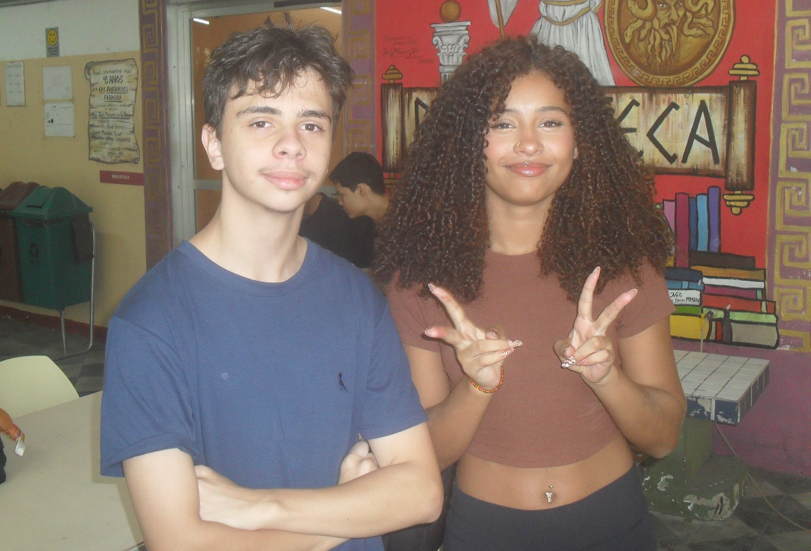

Sobre Nós
Bem-vindos ao nosso espaço dedicado às lendas urbanas latinas. Um território onde mistério, memória e história se entrelaçam como fios antigos de um mesmo tecido cultural. Aqui celebramos a força e a beleza da cultura latina, suas vozes ancestrais e suas narrativas que resistiram ao tempo, atravessaram as fronteiras e continuam vivas porque carregam situações profundas sobre nossos povos.
Cada história que você encontrará aqui guarda um detalhe das muitas identidades que formam a América Latina: heranças indígenas que ainda ecoam nas montanhas e nas florestas; raízes haitianas que pulsaram mesmo em tempos de dor e hoje florescem em resistência; influências que foram reinterpretadas, recriadas e transformadas; além das contribuições de imigrantes e comunidades que, juntas, moldaram um imaginário extremamente diverso, vibrante e único no mundo.
Este site foi criado com carinho, respeito e admiração, um gesto de valorização e reconhecimento de uma cultura que nem sempre recebe a atenção que merece, mas que permanece incrivelmente rica, complexa e essencial. Aqui, cada lenda é tratada como patrimônio: não apenas como histórias assustadoras, mas como testemunhos vivos de nossa identidade coletiva.
Queremos que você sinta orgulho ao percorrer estas páginas. Orgulho das nossas origens, das nossas crenças e da força simbólica que moldou o jeito latino de sentir, de imaginar e de existir. Ao mergulhar neste universo, você encontrará figuras enigmáticas, paisagens encantadas, almas inquietas e criaturas que caminham entre os mundos, personagens que existem porque carregam algo profundamente humano, algo que fala diretamente à nossa essência.
Sinta-se em casa para explorar cada canto deste espaço. Aqui, as sombras são acolhedoras, os segredos se revelam a quem caminha com curiosidade. Que cada história desperte em você não apenas fascínio, mas também o reconhecimento da grandeza da cultura latina, uma cultura que há muito merece mais voz, mais luz e mais celebração.
Seja bem-vindo. As portas estão abertas, e o mistério o aguarda.
E aproveitamos este momento para expressar nossa gratidão aos professores que nos acompanharam ao longo deste ano. A cada aula vocês ajudaram a fortalecer conhecimento e despertar curiosidades que hoje sanamos nesse projeto. Obrigado por acreditarem. Esse trabalho também é reflexo do cuidado que vocês compartilharam com a gente.
Davi de Moura Silva e Alice Ferreira dos Santos